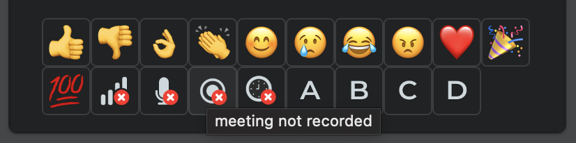
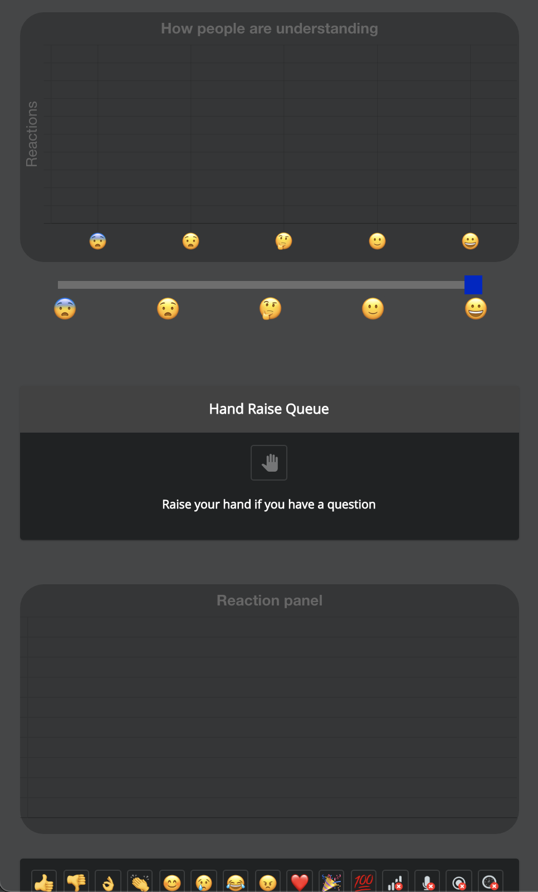
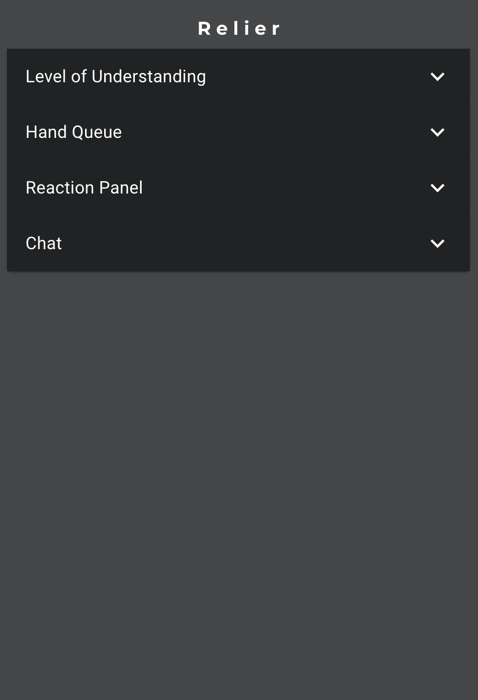
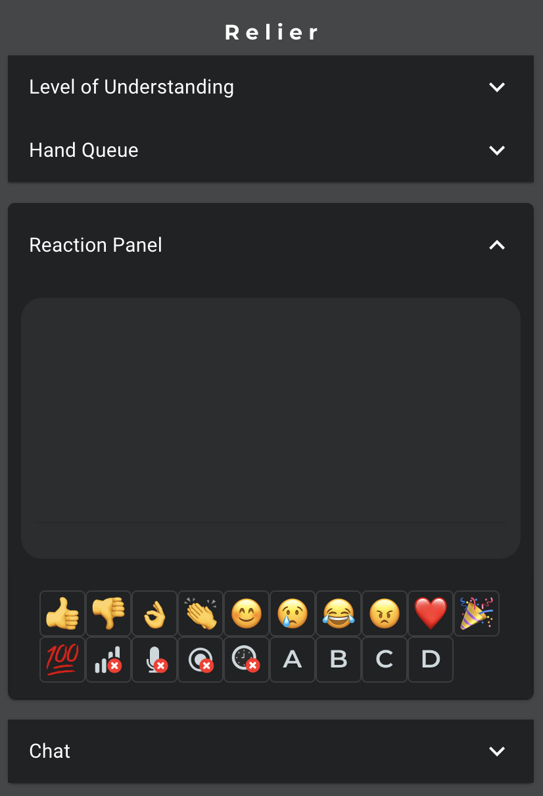

Beta Prototype
1. Design Evolution
Based on the feedback we received, we made several main modifications to our alpha system:
1. Add alt text and tooltips for the reaction emojis
From the peer evaluation, one reviewer was still a bit confused with what each icon represented. We therefore decided that it would be more accessible and insightful for the users if we added signifiers in the form of alt text and tooltips for each of the reactions. This way, we support screen readers and participants are able to react with the icons which convey their message. This modification guarantees Nielsen’s heuristics “Recognition rather than recall” and “Help and documentation”.

2. Minimizing panels
Another issue raised by our reviewers is the cognitive load of our application as there are two graphs that fluctuate as participants add their reactions and level of understanding. In order to remediate to this problem, we chose to make each section collapsible by clicking the toggle at the top right. This way, users only need to open the panels that interest them. If a user feels overwhelmed by the information displayed or feels distracted, they can minimize the given sections. This modification ensures we meet our efficiency usability goal as well as Nielsen’s heuristics “User control and freedom” and “Aesthetic and minimalist design”.
Alpha

Beta


3. Confirmation flows
During the usability evaluation, the evaluating team raised that some features could be problematic if they were used by accident, such as the clear raised hand queue. If the presenter pressed the button by accident, it is impossible to recover the queue. In order to prevent accidental behavior, we implemented confirmation flows such that if the user clears the queue, they have to confirm their action by acknowledging that it is irreversible. With this modification, our system now meets Nielsen’s heuristics “User control and freedom” and “Error prevention”.
4. Reaction expiry
Another change we have implemented is expiring user reactions and level of understanding after a minute. This avoids users having to constantly clear their inputs as it is a tedious task and sometimes it is forgotten. This way, the graph will not display data that is no longer relevant. This modification was important to fulfill Nielsen’s heuristic “Match between system and the real world”.
5. Error messages
To improve error visibility, we opted to display audio visual problems highlighted by the participants through the reactions panel in a more prominent way. With these changes, presenters can effectively fix problems that occur during their meetings and ensure that their meeting goes smoothly. This feature was implemented to fulfill Niesen’s heuristic “Error Evention”
6. Removed graph animations
Another design change we made was to remove the graph animation for both the level of understanding and the reaction graph as the movement was distracting for the users. This also helps to reduce the cognitive overload issue raised during testing. This modification was made to follow Nielsen’s heuristic “Aesthetic and minimalist design”
2. Prototype Revisions
Please navigate
Here!
3. Refinement of user manual
Presenter User Manual
Participant User Manual